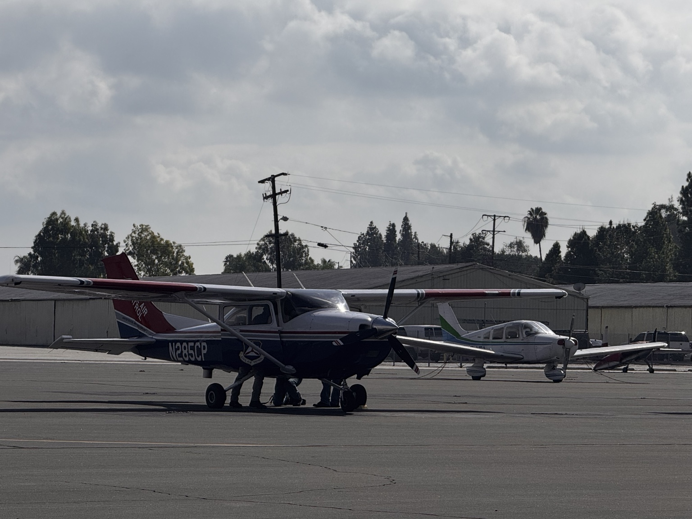
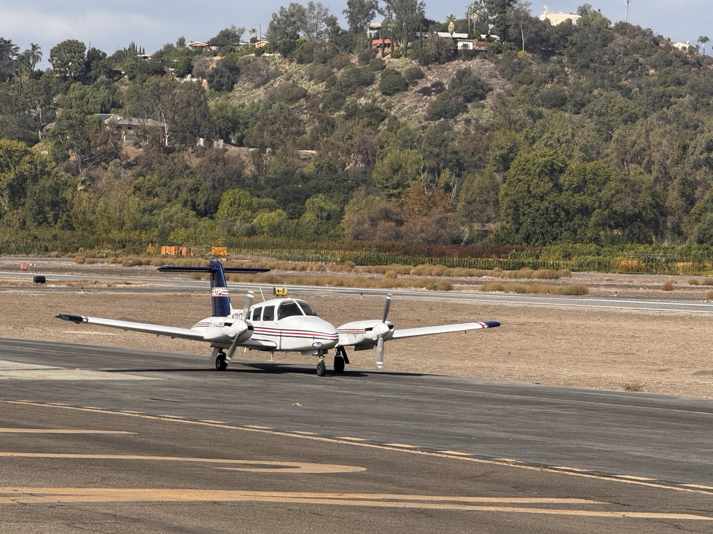

高翼单发 · High-wing Single
结构简单、视野和地面间隙良好，常见于初级训练与通用航空。
1 × EngineHigh WingWing StrutFixed Gear
通过两张实拍照片对比高翼单发与低翼双发飞机：在不同视角中定位关键部件，再用“点头、摇头、歪头”记住 Pitch、Yaw、Roll。
侧前方视角适合观察机翼支撑杆、单发动机、尾翼和固定起落架。点击类别只看相关标注。

正面略偏左的视角突出双发动机、双螺旋桨、低翼、前三点起落架和高置水平尾翼。

结构简单、视野和地面间隙良好，常见于初级训练与通用航空。
两侧发动机带来更复杂的动力管理，也适合学习多发与单发失效操作。
先记“它在哪里”，再记“它做什么”。这些核心部件在两种构型上的功能基本相同。
让空气流过翼型并产生升力，支撑飞机重量。Creates lift as air flows around the airfoil, supporting the aircraft’s weight.
左右副翼反向偏转，使飞机绕纵轴横滚。Move oppositely to roll the aircraft about its longitudinal axis.
放下时增加升力和阻力，帮助低速起飞与着陆。Increase lift and drag for lower-speed takeoff and landing.
把机翼载荷传给机身，为高翼提供结构支撑。Transfers wing loads to the fuselage and braces the high wing.
燃烧燃料产生机械功率，带动螺旋桨旋转。Produces mechanical power that turns the propeller.
像旋转的机翼，把发动机功率转换为向前推力。Acts like a rotating wing, converting power into forward thrust.
支撑机头，并在地面滑行时帮助转向。Supports the nose and helps steer while taxiing.
承受大部分飞机重量和着陆冲击。Carries most of the aircraft’s weight and landing loads.
提供方向稳定性，帮助机头保持顺着相对气流。Provides directional stability and keeps the nose aligned with airflow.
左右偏转以控制偏航，并配合副翼协调转弯。Controls yaw and works with the ailerons for coordinated turns.
提供俯仰稳定性，帮助飞机保持平衡姿态。Provides pitch stability and helps the aircraft maintain balance.
上下偏转以控制机头抬高或压低。Controls pitch by moving the nose up or down.
无论单发还是双发，每个运动都绕一条穿过飞机重心的轴发生。最实用的记忆方法：Pitch 是点头，Yaw 是摇头，Roll 是歪头。
绕 Lateral Axis 横轴旋转。
主要由 Elevator 升降舵控制。Rotation about the lateral axis; primarily controlled by the elevator.
绕 Vertical Axis 垂直轴旋转。
主要由 Rudder 方向舵控制。Rotation about the vertical axis; primarily controlled by the rudder.
绕 Longitudinal Axis 纵轴旋转。
主要由 Ailerons 副翼控制。Rotation about the longitudinal axis; primarily controlled by the ailerons.